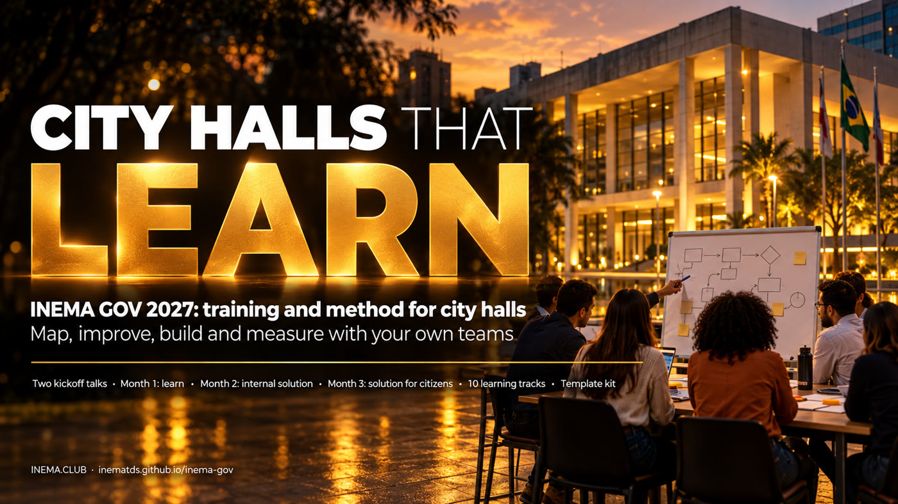

In 90 days, the city hall team trains itself, improves an internal process and delivers a simple solution for citizens.

INEMA GOV is an applied training program for city halls. Managers, civil servants and the IT team learn to map real processes, simplify routines and build small digital solutions, using artificial intelligence safely. In three months they produce two tested solutions: one for internal work and one for citizens. Here you will find the method, the tracks with open INEMA courses, the templates to fill in and the pilot plan.
Your city hall does not need to start by buying more software. It needs to learn to transform what it already does.
Each department brings real processes to the workshops. Class happens on top of actual work, not invented examples.
One internal solution (month 2) and one citizen-facing solution (month 3): small, tested and with a named owner.
Institutional, not partisan. Multipliers, documentation and a shared library continue after the administration changes.
First understand and simplify the process. Only then think about technology.
Mayor, deputy mayor, secretaries and appointed positions. Vision, priorities, governance and how to demand results. They do not need to code.
The core group. They map flows, find bottlenecks, redesign the work, specify and supervise.
Those who serve citizens and know the real problem. Practical use of AI and direct participation in improvements.
Integration, automation, agents, security, testing, deployment and maintenance.
Principle: do not train only IT. The knowledge of the people who do the work is essential to solve the right problem.
One in-person regional meeting per month, with practice and exchange between municipalities, and online activities between meetings.
The municipality in the age of AI · how to transform management · the INEMA GOV method · mobilization.
Output: formal support, designated owners and pre-selected problems. Sponsorship agreementAI without complication · real problems of daily work · from idea to solution (live demo) · engagement workshop.
Output: mobilized civil servants, a list of pain points and working groups formed.In the annual program: one meeting per month, new improvement cycles, tracks 6 to 10 in more depth, multipliers leading the next cycle and the shared library growing.
| Goals to plan for, per municipality | Range |
|---|---|
| Civil servants trained | 30–60 |
| Processes mapped | 10–20 |
| Improvements prioritized | 3–5 |
| Solutions validated | 2 (one internal, one for citizens) |
These are goals for planning, not guarantees. They change with size, digital maturity, access to systems and approvals. No complete system or complex integration in 90 days.
The heart is tracks 3 and 4: mapping and improving processes. Where no course for the public sector exists yet, it says "gap" — that is where the new courses and the pilots come in.
Fundamentals, applications and limits. All audiences.
Gap: examples and limits specific to Brazilian city halls.Leadership, priorities and indicators.
Gap: talk A in class format.Interviews, flows, bottlenecks and rules.
Simplify, standardize and eliminate steps.
Gap: municipal redesign cases — they come out of the pilots.Documents, research, spreadsheets and reports.
Gap: the same routine in the browser only, without a terminal.Routines, supervision and integrations.
Prototypes and tests.
ERP, APIs, interoperability and registries.
Data protection (LGPD, Brazil's data protection law), auditing, access and risks.
Indicators, evaluation and LOOP-R.
These are not ten new systems. Each team chooses and solves high-impact, low-risk processes.
| Area | Project examples |
|---|---|
| Administration | Digital registry, document routing, task control |
| Human resources | Vacations, internal requests, onboarding of civil servants, rules lookup |
| Procurement and bidding | Demand organization, document checking, contract tracking |
| Public works and infrastructure | Maintenance requests, work orders, inspection |
| Education | School administration, documents, communication with families |
| Health | Administrative routines, queue organization, requests |
| Social assistance | Service flows, documents, follow-up |
| Finance and taxation | Service desk, queries, administrative checks |
| Environment | Registrations, inspections, requests |
| Mayor's office and ombudsman | Triage, citizen service, reports |
Social benefits, health, taxes, sanctions and citizens' rights require legal assessment, quality data, human oversight and additional controls. They are not automated without these safeguards.
Plain text, to print or paste into a city hall document. The pilots will adjust each one. The templates are linked in Portuguese (in Portuguese).
Owners, departments and authorized time.
12 questions scored 0 to 3 to choose where to start.
How the work happens today and where it gets stuck.
Filter and scoring to choose the two.
"Done when", written before building.
Data, access, oversight and publication.
Maintainer, access, support and limits.
So another city hall can reuse it.
Library rule: share method and authorized artifacts, never municipal or personal data without a legal basis and controls. This material organizes points of attention and does not replace the analysis of each municipality's legal counsel.
Test the method before taking it to other city halls. No pilot is set up yet; this is the working list. Afterwards, three city halls of different sizes and the national replication kit.
Full plan, with the "done when" of each pilot: pilotos/README.md (in Portuguese). Method in detail: metodo/ (in Portuguese).